Lapisan Fisik & Cabling
Pertemuan 3
Referensi Utama: Forouzan — Data Communications and Networking
Dosen Pengampu:
Outline Materi
- Konsep Sinyal: Analog vs Digital
- Gangguan Transmisi
- Guided Media:
- Coaxial
- Twisted Pair
- Fiber Optik
- Unguided Media:
- Radio
- Microwave
- Infrared
- Satelit
1. Konsep Sinyal & Transmisi
Data vs Sinyal
- Data: Entitas yang mengandung informasi (teks, gambar, video). Komputer menyimpannya sebagai bit 0 dan 1.
- Sinyal: Representasi elektrik/elektromagnetik dari data, agar bisa merambat secara fisik melalui kabel atau udara.

Sistem transmisi dasar
Sinyal Analog
- Intensitas (voltase) berubah secara kontinu dan mulus seiring waktu — tidak ada lompatan mendadak.
- Digambarkan sebagai gelombang sinus yang meliuk-liuk.
- Tiga parameter utama: Amplitudo (kekuatan), Frekuensi (kecepatan gelombang), Phase (posisi awal gelombang).
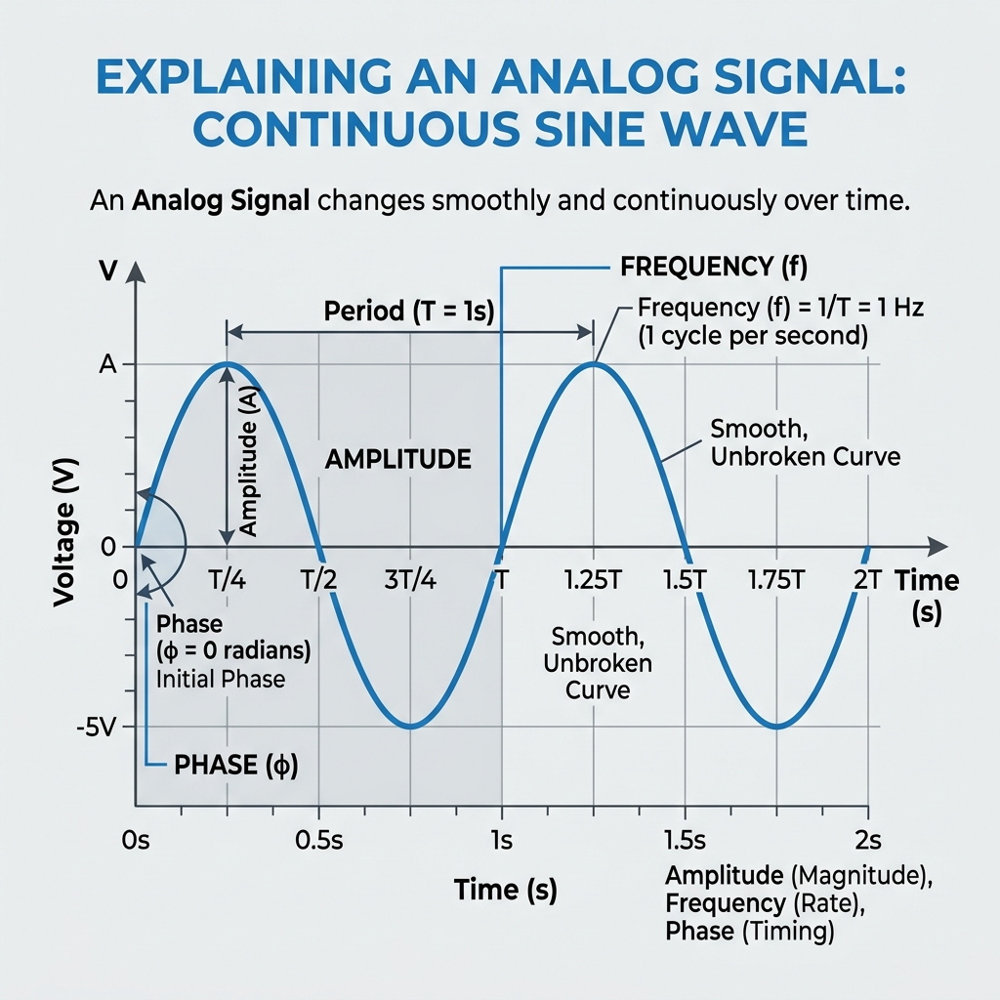
Gelombang analog — kontinu & mulus
Sinyal Digital
- Hanya memiliki nilai diskrit yang terbatas — biasanya dua level: tinggi dan rendah.
- Bentuk gelombang: persegi (kotak-kotak, patah tajam).
- Representasi biner langsung:
• +5 Volt = bit 1
• 0 Volt = bit 0
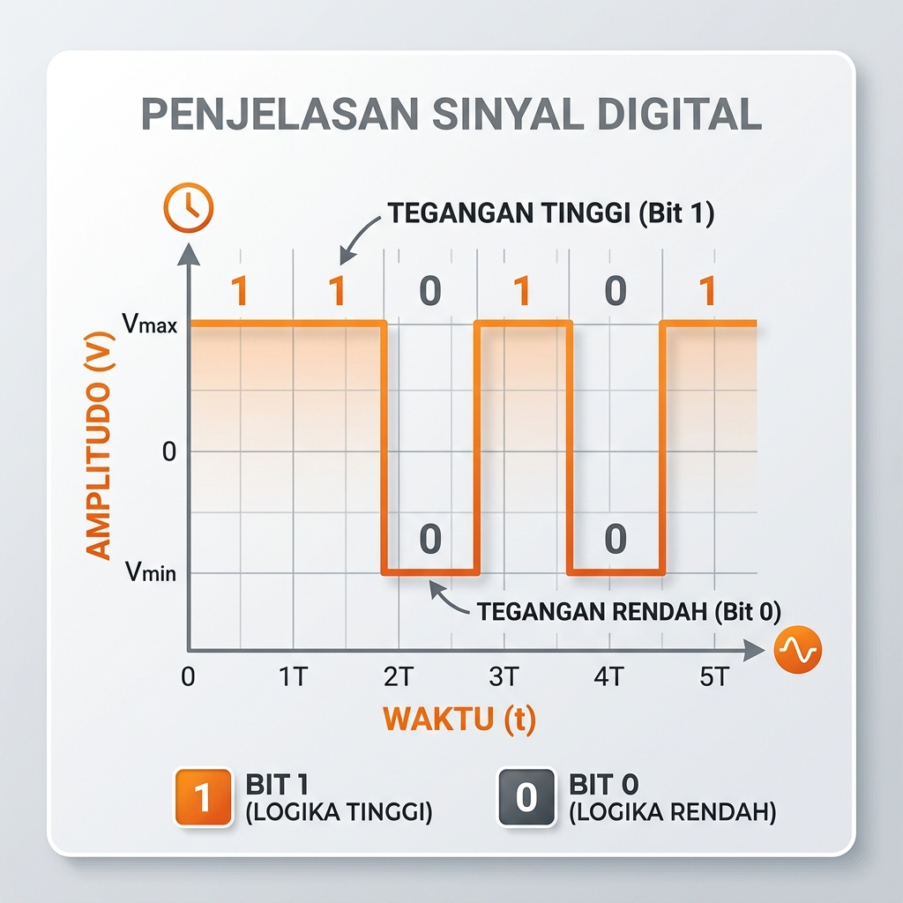
Gelombang digital — diskrit (kotak-kotak)
Modulasi (Mo-Dem)
- Proses menumpangkan data digital ke atas sinyal analog pembawa (carrier signal).
- Diperlukan agar sinyal bisa dikirim jarak jauh (4G, satelit, ADSL).
- Alat yang melakukan modulasi (digital→analog) dan demodulasi (analog→digital) disebut Modem.
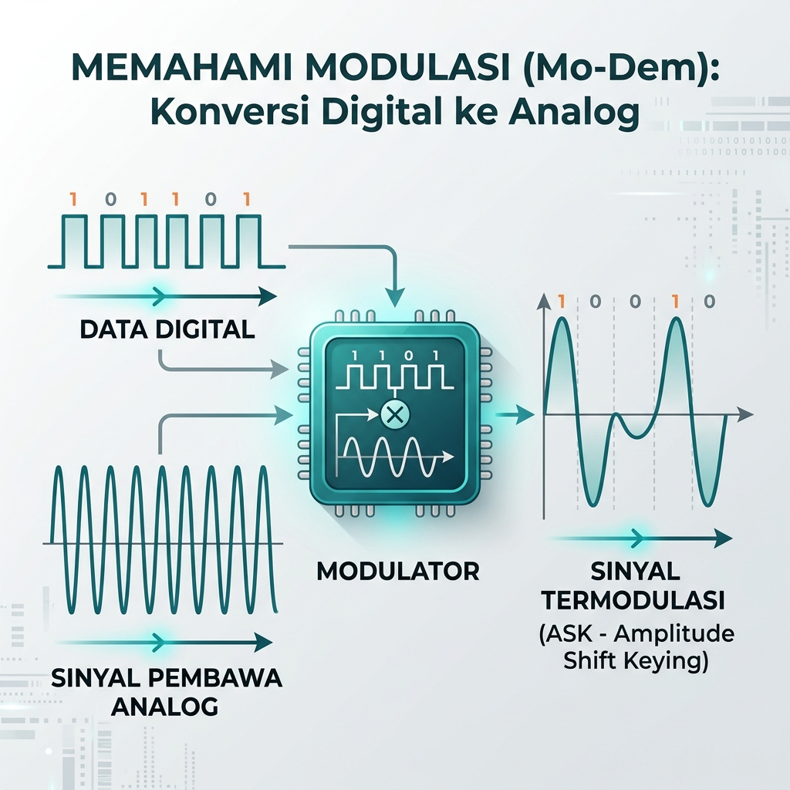
Proses penumpangan data digital ke sinyal analog
2. Gangguan Transmisi (Impairment)
Tiga Jenis Gangguan Transmisi
Sinyal yang dikirim dari titik A tidak pernah tiba 100% identik di titik B. Selalu ada degradasi akibat tiga faktor:
- Attenuation (Redaman) — sinyal kehilangan energi dan melemah.
- Distortion (Distorsi) — bentuk sinyal berubah dari aslinya.
- Noise (Kebisingan) — sinyal liar tak diinginkan bercampur.
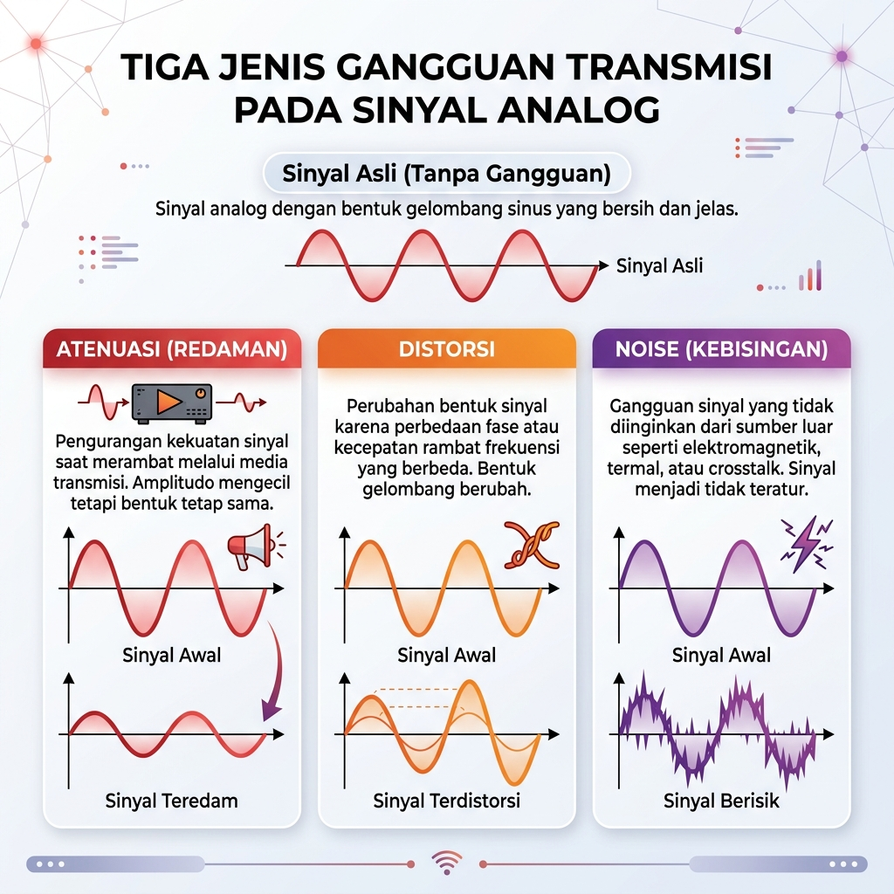
Ilustrasi redaman, distorsi, dan noise
Attenuation (Redaman)
- Kehilangan energi — sinyal melemah seiring bertambahnya jarak.
- Terjadi karena resistansi kabel mengubah energi listrik menjadi panas.
- Diukur dalam satuan Decibel (dB).
- Solusi: Repeater atau Amplifier dipasang di tengah jalur.
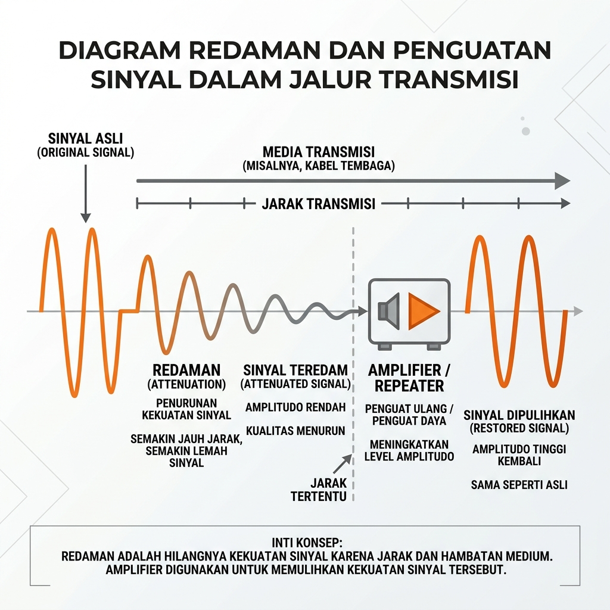
Redaman seiring jarak dan fungsi repeater
Distortion (Distorsi)
- Perubahan bentuk sinyal dari aslinya — bukan sekadar melemah.
- Terjadi paling sering pada sinyal komposit (gabungan banyak frekuensi).
- Setiap komponen frekuensi merambat dengan kecepatan sedikit berbeda di dalam medium.
- Akibatnya, komponen-komponen tersebut tiba di tujuan pada waktu yang tidak serentak.
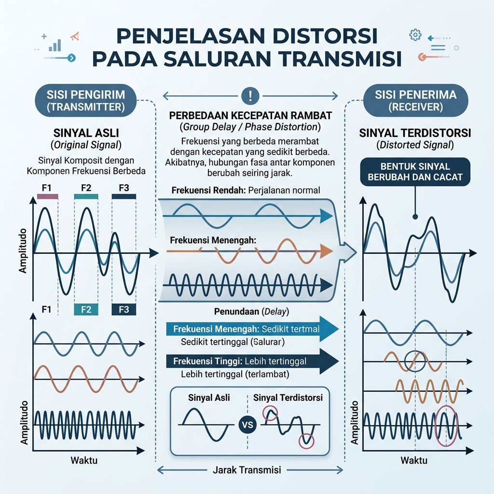
Perubahan bentuk sinyal komposit karena distorsi
Noise (Kebisingan / Gangguan)
Sinyal tambahan liar yang tidak diinginkan, bercampur dengan sinyal asli sehingga mengubah isi informasi.
Tiga jenis noise paling umum:
- Crosstalk: Efek induksi elektromagnetik dari kabel lain yang berdekatan. Penyebab utama inilah yang membuat kabel UTP dipilin — untuk membatalkan efek crosstalk.
- Thermal Noise: Pergerakan acak elektron dalam konduktor akibat suhu ruangan. Tidak bisa dihilangkan sepenuhnya.
- EMI: Gangguan dari sumber eksternal seperti motor listrik, microwave oven, atau petir.
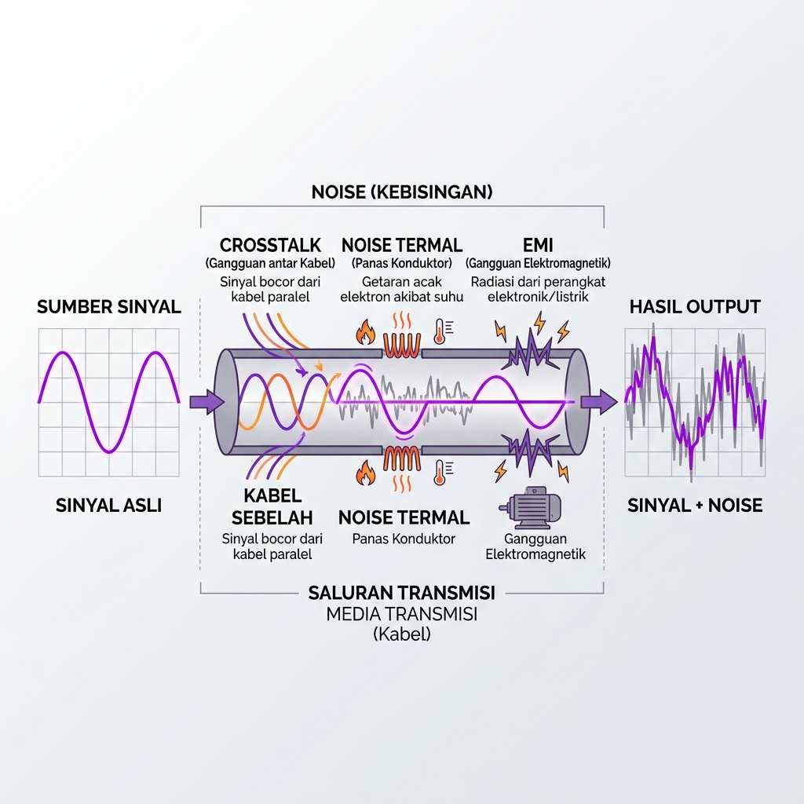
Ilustrasi tiga jenis gangguan noise
3. Media Transmisi
Jalan Raya Bagi Sinyal
Guided vs Unguided Media
- Guided Media (Kabel): Sinyal "dipandu" di dalam
medium padat dari ujung ke ujung.
Contoh: Twisted Pair, Coaxial, Fiber Optik. - Unguided Media
(Nirkabel): Gelombang elektromagnetik merambat bebas di udara atau ruang
hampa tanpa panduan fisik.
Contoh: Wi-Fi, BTS Seluler, Satelit.

Klasifikasi media transmisi
Guided 1: Coaxial Cable — Struktur
Kabel koaksial memiliki konstruksi berlapis yang menjadikannya sangat tahan noise:
- Centre Core — kawat tembaga solid sebagai penghantar sinyal utama.
- Dielectric Insulator — isolator plastik tebal memisahkan inti dari shield.
- Metallic Shield — jaring anyaman logam atau foil aluminium pelindung EMI sekaligus penghantar balik.
- Plastic Jacket — pembungkus luar untuk proteksi fisik.

Penampang kabel koaksial

Fisik kabel koaksial dikupas
Guided 1: Coaxial Cable — Karakteristik & Penggunaan
- Frekuensi kerja: 100 kHz – 500 MHz (jauh lebih tinggi dari UTP).
- Bandwidth besar — cocok untuk sinyal video frekuensi tinggi.
- Konstruksi kaku — tidak mudah ditekuk berkali-kali.
- Konektor: BNC (Bayonet Neill–Concelman) — twist-lock, tidak mudah lepas.
- 📺 TV Kabel (FirstMedia, MNC Play) — distribusi sinyal dari head-end ke rumah.
- 📷 CCTV Analog — kabel RG-59/RG-6 menghubungkan kamera ke DVR.
- 🔌 LAN 10Base2/10Base5 — teknologi jaringan lawas 1980–1990-an.
- 📡 Antena TV/Radio — menghubungkan antena atap ke TV.
Guided 2: Twisted-Pair Cable — Konsep
- Terdiri dari dua konduktor tembaga, masing-masing dibungkus isolator plastik, lalu dipilin (di-twist) bersama.
- Mengapa harus dipilin?
Pilinan menciptakan medan magnet yang saling berlawanan pada kedua kawat. Saat noise EMI datang, efeknya terbatalkan secara alami (differential signaling). - Semakin rapat pilinan per meter → semakin kebal terhadap EMI, tapi semakin mahal.

Penampang UTP (atas) & STP (bawah)
Guided 2: UTP vs STP
- Tidak memiliki pelindung logam tambahan — hanya pilinan kawat.
- Paling murah dan lentur — mudah dipasang di berbagai sudut gedung.
- Standar de-facto jaringan LAN di seluruh dunia (rumah, kantor, kampus).
- Rentan terhadap EMI di lingkungan industri berat.
- Memiliki lapisan metal braid / aluminium foil tambahan yang membungkus keempat pasang kawat.
- Memberikan kekebalan ekstra terhadap EMI yang ekstrem.
- Digunakan di lingkungan industri, pabrik, atau area dekat tiang listrik tegangan tinggi.
- Lebih mahal, lebih kaku, dan memerlukan ground yang benar agar efektif.

UTP vs STP
Kategori Kabel UTP
| Kategori | Max Bandwidth | Max Data Rate | Penggunaan |
|---|---|---|---|
| Cat 3 | 16 MHz | 10 Mbps | Telepon analog, LAN 10Base-T (usang) |
| Cat 5 | 100 MHz | 100 Mbps | Fast Ethernet (usang) |
| Cat 5e | 100 MHz | 1 Gbps | Standar LAN rumah / kantor kecil. Maks 100m. |
| Cat 6 | 250 MHz | 10 Gbps (55m) | LAN perkantoran modern. Ada spline plastik di tengah. |
| Cat 6a | 500 MHz | 10 Gbps (100m) | Data Center / Backbone LAN. Lebih tebal & berat. |
| Cat 7 | 600 MHz | 10 Gbps+ | High-density Data Center (konektor GG45). |
Konektor RJ45 & Susunan Warna 568-B
RJ45 (Registered Jack 45) adalah konektor plastik transparan dengan 8 pin tembaga yang menjadi standar kabel UTP.
Susunan warna TIA/EIA 568-B (paling populer di Indonesia):
Pin 1→8, klip RJ45 menghadap ke bawah:
- Putih-Oranye
- Oranye
- Putih-Hijau
- Biru
- Putih-Biru
- Hijau
- Putih-Coklat
- Coklat

Konektor RJ45 (8 pin tembaga)

Jack RJ45 pada keystone panel
Kabel UTP: Straight & Cross
Kabel UTP Straight-Through
Straight-through cable adalah kabel UTP di mana kedua ujungnya memiliki susunan warna pin yang sama. Biasanya menggunakan standar TIA/EIA-568B di kedua ujungnya.
Digunakan untuk menghubungkan dua perangkat jaringan yang berbeda tingkat/jenis. Contoh: Komputer (PC/Laptop) ke Switch / Hub, Komputer ke Router (Port LAN), Switch ke Router.

Susunan Straight-Through (568-B ke 568-B)
Kabel UTP Crossover
Crossover cable adalah kabel UTP di mana salah satu ujung menggunakan TIA/EIA-568A dan ujung lainnya TIA/EIA-568B. Terjadi "persilangan" pada pin transmisi (Tx) dan penerima (Rx).
Digunakan untuk menghubungkan dua perangkat jaringan yang setingkat/sejenis. Contoh: Komputer ke Komputer secara langsung, Switch ke Switch, Router ke Router.

Susunan Crossover (568-B ke 568-A)
Guided 3: Fiber Optik (Prinsip)
Fiber optik menghantarkan pulsa cahaya (bukan arus listrik) melalui inti kaca/plastik silika berkualitas tinggi.
Prinsip kerja: Total Internal Reflection
Cahaya yang masuk ke inti fiber akan dipantulkan bolak-balik di dinding kaca secara terus-menerus, tidak bocor keluar, hingga mencapai tujuan.
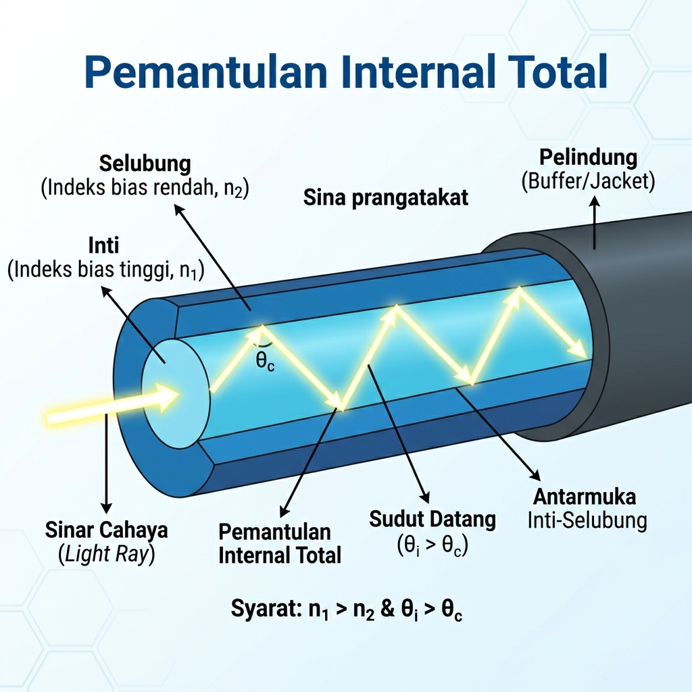
Prinsip Pemantulan Internal Total
Guided 3: Fiber Optik (Struktur)
Lapisan struktur fiber:
- Core — inti kaca ultra-jernih, tempat cahaya merambat.
- Cladding — lapisan kaca dengan indeks refraksi lebih rendah, memantulkan cahaya ke dalam core.
- Coating — pelindung plastik tipis dari goresan.
- Strength Member & Outer Jacket — proteksi mekanis.

Struktur kabel fiber optik
Guided 3: Jenis Fiber Optik
- Single-mode (SMF): Inti sangat kecil (~8 µm). Cahaya merambat lurus tanpa pantulan. Jarak sangat jauh (puluhan–ratusan km). Dipakai untuk backbone internet & backbone antar kota.
- Multi-mode (MMF): Inti lebih besar (~50–62.5 µm). Cahaya merambat dalam banyak jalur (mode). Jarak lebih pendek (maks ~500m). Dipakai di data center & LAN gedung.

Single-mode (atas) vs Multi-mode (bawah)
Guided 3: Tulang Punggung Internet Global
- 🌍 Kabel Bawah Laut (Submarine Cables): Fakta mengejutkan: Sekitar 99% data internet antar benua mengalir melalui kabel fiber optik yang diletakkan di dasar samudera, bukan melalui satelit.
- 📡 Mengapa bukan Satelit? Satelit memiliki bandwidth yang jauh lebih terbatas dan latensi yang lebih lambat (ratusan milidetik) dibandingkan fiber optik yang mampu menghantarkan cahaya antar benua dalam puluhan milidetik.
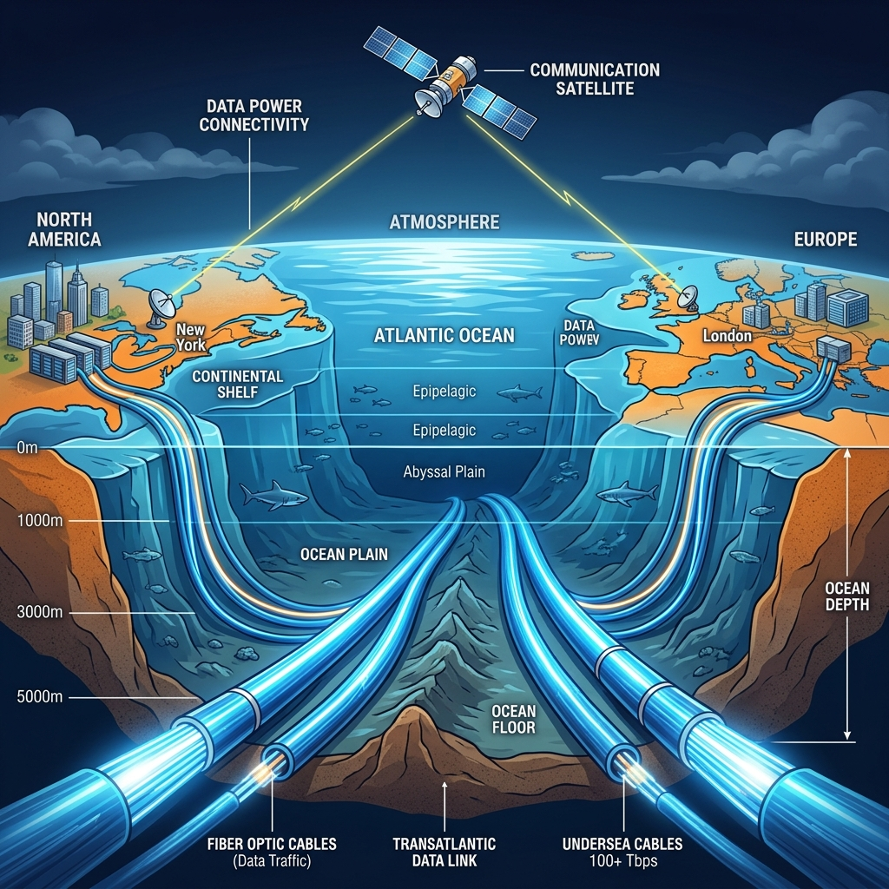
Ilustrasi jaringan kabel laut antar benua
Guided 3: Kelebihan Fiber Optik
- 🚀 Bandwidth Masif: Ratusan Gbps hingga Terabit/s. Tulang punggung internet global di bawah laut.
- 📏 Redaman Sangat Kecil: Kabel tembaga perlu repeater setiap 100m. Fiber optik bisa jalan puluhan km tanpa repeater.
- 🛡️ Kebal EMI 100%: Tidak pakai listrik → tidak tersambar petir, tidak terganggu mesin pabrik.
- ⚖️ Lebih Ringan & Kecil: Satu kabel fiber bisa menggantikan ribuan kabel tembaga.
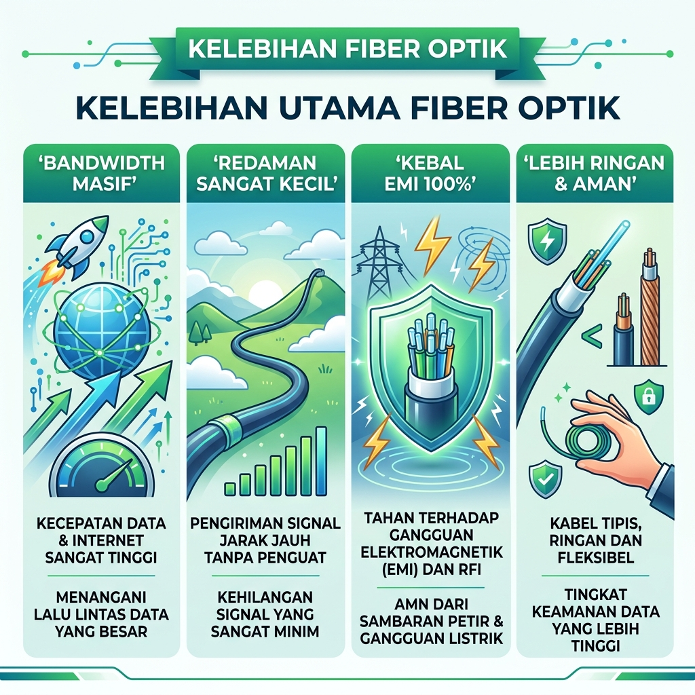
4 Keunggulan Utama Fiber Optik
4. Unguided Media (Nirkabel)
Gelombang elektromagnetik merambat bebas tanpa panduan fisik
Empat Jenis Unguided Media
Gelombang Radio
3 Hz – 1 GHz
Omnidirectional
Tembus tembok
FM, AM, Bluetooth
Gelombang Mikro
1 – 300 GHz
Unidirectional
Line-of-Sight
BTS, Wi-Fi, Backhaul
Infrared
300 GHz – 400 THz
Jarak < 1 m
Tidak tembus dinding
Remote TV, IrDA
Satelit
Jangkauan global
Latensi tinggi (GEO)
Area terpencil
GPS, Starlink, VSAT
Karakteristik Gelombang Radio
- Frekuensi: 3 Hz – 1 GHz. Mencakup sub-band: ELF, VLF, LF, MF (AM), HF, VHF, UHF.
- Arah Rambat: Omnidirectional — menyebar ke semua arah seperti cahaya bola lampu. Tidak butuh pengarahan antena.
- Penetrasi: Mampu menembus tembok beton, hujan, dan bukit kecil.
- Panjang Gelombang: Panjang (meter hingga kilometer), sehingga tidak mudah diserap objek kecil.

Transmisi gelombang radio AM/FM
Kelemahan Gelombang Radio
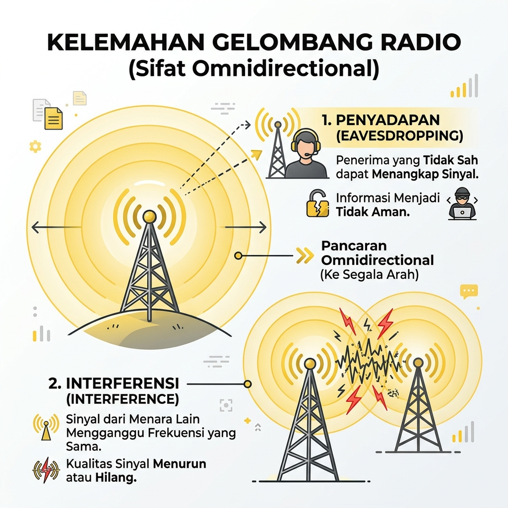
Risiko penyadapan & interferensi sinyal radio
Gelombang Radio — Contoh Perangkat
Perangkat Penyiaran (Broadcasting)
- 📡 Menara Pemancar AM/FM — siaran radio ke jutaan pendengar sekaligus.
- 📺 Pemancar TV Analog/Digital (VHF/UHF) — siaran televisi terrestrial.
- 🚁 Radio Komunikasi Penerbangan — ATC menggunakan band VHF 118–137 MHz.
- 🚒 HT (Handy Talky) — komunikasi darurat polisi, pemadam kebakaran.
Perangkat Jaringan Pendek
- 🔵 Bluetooth (2.4 GHz, ISM band) — headset, speaker, transfer file jarak pendek (< 10m standar).
- 🌐 Zigbee & Z-Wave (868 MHz / 2.4 GHz) — otomasi rumah (smart home), sensor IoT.
- 🎮 RF Remote — remote TV/AC generasi baru yang tidak butuh LoS seperti infrared.
Gelombang Mikro — Karakteristik
- Frekuensi: 1 GHz – 300 GHz. Termasuk sub-band S, C, X, Ku, Ka.
- Arah Rambat: Unidirectional — terfokus seperti sinar laser. Antena parabola digunakan untuk memfokuskan sinyal.
- Syarat Line-of-Sight (LoS): Antena pengirim dan penerima harus bisa saling melihat — tidak boleh ada halangan gunung, gedung tinggi, atau pohon besar.
- Panjang Gelombang: Pendek (mm – cm). Mudah terserap oleh hujan lebat (Rain Fade).

Perangkat microwave: BTS, WiFi, backhaul
Gelombang Mikro — Contoh Perangkat
Komunikasi Seluler & LAN
- 🗼 BTS (Base Transceiver Station) — menara seluler 4G LTE / 5G NR. Menggunakan band 700 MHz – 26 GHz.
- 📶 Wi-Fi Router (2.4 GHz & 5 GHz) — jaringan nirkabel lokal di rumah/kantor/kampus.
- 🔷 WiMAX (2.3–3.5 GHz) — broadband nirkabel jarak menengah (beberapa km).
Backhaul & Point-to-Point
- 📡 Antena Microwave Backhaul — menghubungkan BTS ke jaringan inti. Dua antena parabola saling berhadapan antar gedung (jarak 1–50 km).
- 🏢 LMDS/MMDS — distribusi internet broadband ke kawasan perumahan tanpa kabel.
- 🌧️ Radar Cuaca & Pesawat — menggunakan band X/C untuk deteksi presipitasi.
Infrared — Karakteristik
- Frekuensi: 300 GHz – 400 THz. Tepat di bawah cahaya tampak pada spektrum elektromagnetik.
- Arah Rambat: Sangat terfokus — berperilaku seperti cahaya biasa.
- Jangkauan: Sangat pendek, efektif hanya beberapa sentimeter hingga ~1 meter.
- Tidak bisa menembus dinding — diblokir oleh material padat apa pun.
- Butuh LoS ketat — pengirim dan penerima harus bertatapan langsung.
- Interferensi matahari: Cahaya matahari mengandung infrared yang dapat mengganggu sinyal.

Perangkat berbasis infrared
Infrared — Contoh Perangkat
Kendali Jarak Dekat
- 📺 Remote Control TV / AC / Proyektor — pengguna paling umum. Menggunakan LED infrared yang memancarkan kode pulsa.
- 🔦 Remote Kamera DSLR — trigger shutter tanpa menyentuh kamera untuk foto long-exposure.
- 🎮 Nintendo Wii Sensor Bar — dua titik infrared yang dilacak oleh Wiimote.
Transfer Data & Deteksi
- 💻 IrDA (Infrared Data Association) — port transfer data di laptop/HP era 1990–2000-an. Kecepatan hingga 16 Mbps (Fast-IR).
- 🔒 Sensor Gerak PIR (Passive IR) — mendeteksi panas tubuh manusia. Digunakan di alarm keamanan dan lampu otomatis.
- 🛒 Barcode Scanner — beberapa model menggunakan LED IR.
Komunikasi Satelit — Orbit & Latensi
| Orbit | Ketinggian | Latensi | Contoh |
|---|---|---|---|
| GEO Geostationary |
~35.786 km | ~500–700 ms | Viasat, HughesNet, TV Parabola |
| MEO Medium Earth |
2.000–20.000 km | ~100–250 ms | GPS, Galileo, Glonass |
| LEO Low Earth |
200–2.000 km | ~20–40 ms | Starlink, OneWeb, Iridium |

Sistem komunikasi satelit (uplink–downlink)
Komunikasi Satelit — Layanan & Perangkat
Internet & Data
- 🛰️ Starlink (SpaceX) — internet via LEO, tersedia di Indonesia. Latensi ~20-40ms, kecepatan ~100-400 Mbps.
- ☁️ VSAT (Very Small Aperture Terminal) — internet satelit GEO untuk kapal laut, rig minyak, desa terpencil. Antena kecil ~1.2m.
- 📱 Direct-to-Cell (Starlink / AST) — koneksi langsung ke smartphone biasa tanpa SIM khusus.
Navigasi & Penyiaran
- 🗺️ GPS — 31 satelit MEO milik AS. Akurasi sipil ~3-5 meter. Digunakan di smartphone, kendaraan, survei.
- 📡 TV Satelit — Telkom-4 / MEASAT / Intelsat (GEO). Dish parabola menangkap siaran langsung dari orbit.
- 🌦️ Satelit Cuaca — BMKG menggunakan data dari satelit GEO untuk prakiraan cuaca nasional.
Perbandingan Keempat Unguided Media
| Jenis | Frekuensi | Arah | Jangkauan | Contoh Aplikasi |
|---|---|---|---|---|
| Gelombang Radio | 3 Hz – 1 GHz | Omnidirectional | Puluhan – ratusan km | AM/FM Radio, Bluetooth, TV Analog, HT |
| Gelombang Mikro | 1 – 300 GHz | Unidirectional (LoS) | Beberapa – puluhan km | Wi-Fi, BTS 4G/5G, Radar, Backhaul |
| Infrared | 300 GHz – 400 THz | Terfokus (LoS ketat) | < 1 meter | Remote TV/AC, IrDA, Sensor PIR |
| Satelit | 1 – 40 GHz (µwave) | Global (downlink luas) | Seluruh bumi | GPS, Starlink, VSAT, TV Parabola |
Rangkuman Pertemuan 3
- Analog vs Digital: Analog bersifat kontinu (gelombang mulus), digital bersifat diskret (nilai pulsa biner).
- Gangguan Transmisi:
- Attenuation: Sinyal melemah seiring jarak.
- Distortion: Perubahan bentuk sinyal komposit.
- Noise: Gangguan sinyal liar (Crosstalk, Thermal, EMI).
- Guided (Kabel):
- Coaxial: Berlapis shield, tahan noise.
- Twisted Pair: UTP & STP. Dipilin untuk atasi crosstalk.
- Fiber Optik: Inti kaca, bandwidth masif, kebal EMI.
- Unguided (Nirkabel): Radio (omnidirectional), Mikro (unidirectional/LoS), Infrared (jarak sangat dekat), dan Satelit (GEO, MEO, LEO).
📝 Tugas Pertemuan 3
Tugas ini dirancang khusus berbasis observasi nyata
Audit Media Transmisi & Gangguan Jaringan di
Lingkungan Anda
Pilih satu lokasi disekitar anda (rumah, kos, atau laboratorium kampus). Lakukan langkah
berikut:
1
Pemetaan Fisik (Wajib Sketsa Tangan):
Gambarkan denah ruangan secara manual. Tandai posisi sumber internet (Modem/Router/Access
Point), letak perangkat pengguna (PC/Laptop/TV), dan jalur kabel yang ada.
2
Identifikasi Guided Media & Potensi EMI:
Temukan minimal 1 jalur kabel jaringan (UTP/Coaxial/Fiber). Amati jalur fisiknya. Apakah
kabel tersebut ditumpuk bersama kabel listrik PLN? Analisislah potensi terjadinya
Crosstalk atau EMI pada kabel tersebut berdasarkan teori (misal: apakah
kabelnya UTP tanpa shield, atau sudah STP?).
3
Analisis Unguided Media (Attenuation & Interferensi):
Amati sinyal Wi-Fi (Gelombang Mikro) di lokasi. Jelaskan secara teknis fenomena
Attenuation (redaman) yang terjadi ketika Anda berpindah dari dekat router ke
ruangan yang terhalang 2-3 tembok tebal. Apakah ada potensi interferensi dari perangkat
Bluetooth atau benda elektronik lain di sekitarnya?
4
Rekomendasi Solusi:
Berdasarkan temuan nomor 2 dan 3, berikan 1 rekomendasi perbaikan fisik (misal: relokasi
alat, penggantian jenis kabel) untuk mengurangi efek Noise atau
Attenuation di lokasi tersebut!
Tanya Jawab & Diskusi
Silakan jika ada pertanyaan mengenai materi ini.